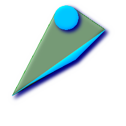
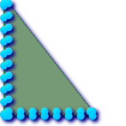
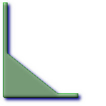
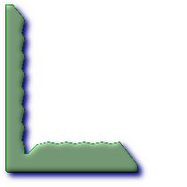
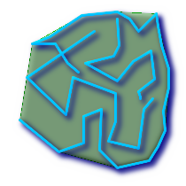
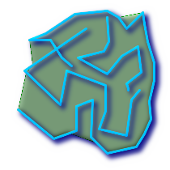

Name
ST_ConcaveHull — The concave hull of a geometry represents a possibly concave geometry that encloses all geometries within the set. You can think of it as shrink wrapping.
Synopsis
geometry ST_ConcaveHull(geometry geomA, float target_percent, boolean allow_holes=false);
Description
The concave hull of a geometry represents a possibly concave geometry that encloses all geometries within the set. Defaults to false for allowing polygons with holes. The result is never higher than a single polygon.
The target_percent is the target percent of area of convex hull the PostGIS solution will try to approach before giving up or exiting. One can think of the concave hull as the geometry you get by vacuum sealing a set of geometries. The target_percent of 1 will give you the same answer as the convex hull. A target_percent between 0 and 0.99 will give you something that should have a smaller area than the convex hull. This is different from a convex hull which is more like wrapping a rubber band around the set of geometries.
It is usually used with MULTI and Geometry Collections. Although it is not an aggregate - you can use it in conjunction with ST_Collect or ST_Union to get the concave hull of a set of points/linestring/polygons ST_ConcaveHull(ST_Collect(somepointfield), 0.80).
It is much slower to compute than convex hull but encloses the geometry better and is also useful for image recognition.
Performed by the GEOS module
![[Note]](images/note.png) | |
Note - If you are using with points, linestrings, or geometry collections use ST_Collect. If you are using with polygons, use ST_Union since it may fail with invalid geometries. |
| |
Note - The smaller you make the target percent, the longer it takes to process the concave hull and more likely to run into topological exceptions. Also the more floating points and number of points you accrue. First try a 0.99 which does a first hop, is usually very fast, sometimes as fast as computing the convex hull, and usually gives much better than 99% of shrink since it almost always overshoots. Second hope of 0.98 it slower, others get slower usually quadratically. To reduce precision and float points, use ST_SimplifyPreserveTopology or ST_SnapToGrid after ST_ConcaveHull. ST_SnapToGrid is a bit faster, but could result in invalid geometries where as ST_SimplifyPreserveTopology almost always preserves the validity of the geometry. |
More real world examples and brief explanation of the technique are shown http://www.bostongis.com/postgis_concavehull.snippet
Also check out Simon Greener's article on demonstrating ConcaveHull introduced in Oracle 11G R2. http://www.spatialdbadvisor.com/oracle_spatial_tips_tricks/172/concave-hull-geometries-in-oracle-11gr2. The solution we get at 0.75 target percent of convex hull is similar to the shape Simon gets with Oracle SDO_CONCAVEHULL_BOUNDARY.
Availability: 2.0.0
Examples
--Get estimate of infected area based on point observations SELECT d.disease_type, ST_ConcaveHull(ST_Collect(d.pnt_geom), 0.99) As geom FROM disease_obs As d GROUP BY d.disease_type;
 ST_ConcaveHull of 2 polygons encased in target 100% shrink concave hull
-- geometries overlaid with concavehull
-- at target 100% shrink (this is the same as convex hull - since no shrink)
SELECT
ST_ConcaveHull(
ST_Union(ST_GeomFromText('POLYGON((175 150, 20 40,
50 60, 125 100, 175 150))'),
ST_Buffer(ST_GeomFromText('POINT(110 170)'), 20)
), 1)
As convexhull;
|  -- geometries overlaid with concavehull at target 90% of convex hull area
-- geometries overlaid with concavehull at target 90% shrink
SELECT
ST_ConcaveHull(
ST_Union(ST_GeomFromText('POLYGON((175 150, 20 40,
50 60, 125 100, 175 150))'),
ST_Buffer(ST_GeomFromText('POINT(110 170)'), 20)
), 0.9)
As target_90;
|
 L Shape points overlaid with convex hull
-- this produces a table of 42 points that form an L shape SELECT (ST_DumpPoints(ST_GeomFromText( 'MULTIPOINT(14 14,34 14,54 14,74 14,94 14,114 14,134 14, 150 14,154 14,154 6,134 6,114 6,94 6,74 6,54 6,34 6, 14 6,10 6,8 6,7 7,6 8,6 10,6 30,6 50,6 70,6 90,6 110,6 130, 6 150,6 170,6 190,6 194,14 194,14 174,14 154,14 134,14 114, 14 94,14 74,14 54,14 34,14 14)'))).geom INTO TABLE l_shape; SELECT ST_ConvexHull(ST_Collect(geom)) FROM l_shape;
|  ST_ConcaveHull of L points at target 99% of convex hull
SELECT ST_ConcaveHull(ST_Collect(geom), 0.99) FROM l_shape;
|
 Concave Hull of L points at target 80% convex hull area
-- Concave Hull L shape points -- at target 80% of convexhull SELECT ST_ConcaveHull(ST_Collect(geom), 0.80) FROM l_shape;
|
 multilinestring overlaid with Convex hull
 multilinestring with overlaid with Concave hull of linestrings at 99% target -- first hop
SELECT ST_ConcaveHull(ST_GeomFromText('MULTILINESTRING((106 164,30 112,74 70,82 112,130 94,
130 62,122 40,156 32,162 76,172 88),
(132 178,134 148,128 136,96 128,132 108,150 130,
170 142,174 110,156 96,158 90,158 88),
(22 64,66 28,94 38,94 68,114 76,112 30,
132 10,168 18,178 34,186 52,184 74,190 100,
190 122,182 148,178 170,176 184,156 164,146 178,
132 186,92 182,56 158,36 150,62 150,76 128,88 118))'),0.99)
|